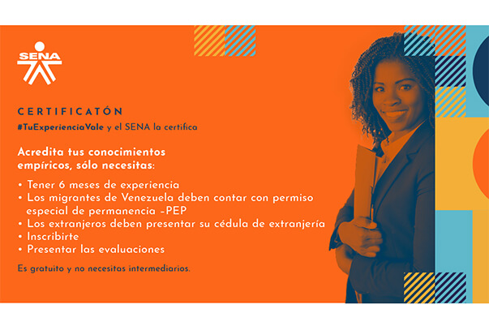
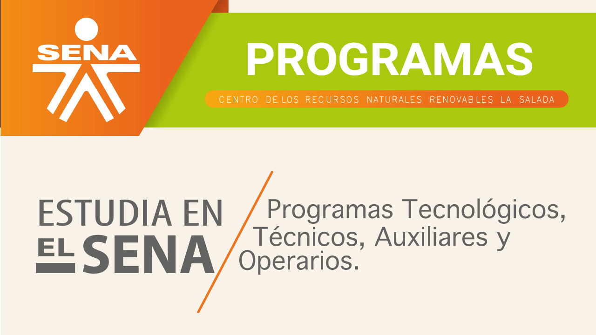

- 
- 


Doble Titulación en pandemia
Durante la emergencia sanitaria causada por el Covid-19, el SENA y el Ministerio de Educación han diseñado estrategias dirigidas a las Entidades Territorial Certificadas—ETC e instituciones educativas para darle continuidad a los procesos formativos.
A través de la circular 111 emitida por el SENA, la alternativa de etapa productiva que los aprendices venían desarrollando en pasantía, se cambió a proyecto productivo, motivo por el que se solicitó al Ministerio de Educación incentivar, en las las Secretarias de Educación y colegios, el trabajo en conjunto para llevar a cabo la etapa productiva.
¿Qué deben hacer los colegios para articular programas técnicos con el SENA?
Para los colegios públicos, se debe presentar la solicitud de intención de articulación ante la Secretaria de Educación y para los colegios privados, el trámite se hace directamente con la regional del SENA.
En conjunto con el SENA se hará la sensibilización al proceso.
En caso de que la institución educativa esté de acuerdo con adoptar los lineamientos del SENA, tendrá que presentar el proyecto de viabilidad directamente a la Secretaría de Educación adscrita, las cuales formalizaran el proyecto a la regional del SENA. Los Establecimientos Educativos privados presentarán el proyecto directamente a las regionales del SENA.
Los Establecimientos Educativos deberán contar con infraestructura, ambientes y equipos necesarios para el desarrollo del programa según las exigencias del diseño curricular: personal administrativo, operativo y pedagógico dedicado al proceso de articulación, según las condiciones del programa y el tipo de titulación que emite el colegio (Bachiller técnico o Bachiller académico).
Garantizar el pago de la ARL para los aprendices inscritos en los programas del SENA.
Garantizar que la institución cuenta con los estándares mínimos exigidos para el SG-SST por la resolución 0312 de 2019 o cualquiera que sea su actualización.